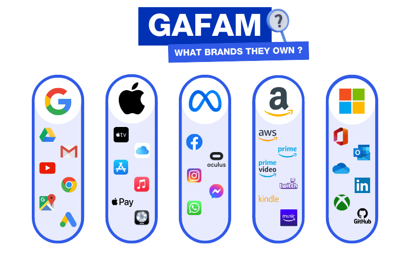

How the Big Five operates is through the core technologies it owns.
Its capabilites span artificial intelligence/machine learning,
cloud and infrastructure, data analytics, and many other innovations.

Artificial Intelligence and Machine Learning:
Google has supported in remarkable AI advances, through Gemini,
the machine learning library TensorFlow, and aiding in research
that supported the creation of ChatGPT. Google has also
developed Tensor Processing Units (TPUs) and Apple's Neural
Processing Units (NPUs) are hardware being used for effective AI
processing. All five companies have also heavily invested and
integrated generative AI, as well as creating competitive Large
Language Models (LLMs).
Software Platforms and Developer Tools:
These tech firms have tools that have massively shaped global
software development. Examples include Microsoft's GitHub, Apple's
developer frameworks (Xcode, Swift, iOS SDKs), and Amazon's
several tools offered through its AWS (Amazon Web Services).
Together, these tools create an ecosystem entirely controlled by
GAFAM. Their influence is undeniable, setting the standards and
workflows that underpin current software innovation.
Data Collection and Data Analytics:
Data collection is very apparent, as GAFAM collects enormous amounts
of data — through direct services (search, social media, devices)
and from secondary sources (acquired companies) — to build
intelligence and improve their respective offerings. Data analytics
is also noticeable through several GAFAM aquisitions, where "big data"
and analytics" spans several fields such as health services,
advertising, and education, according to DensityDesign Lab (see
"GAFAM Empire").